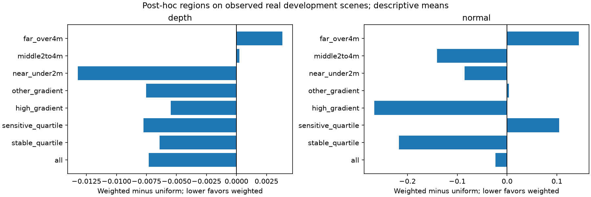
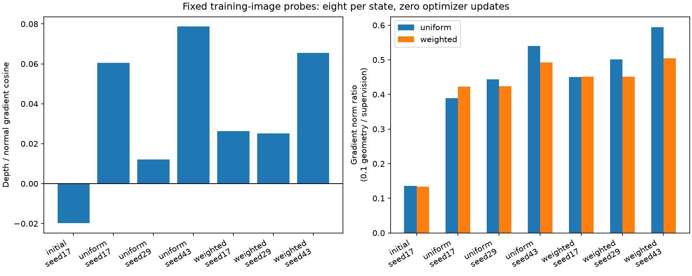
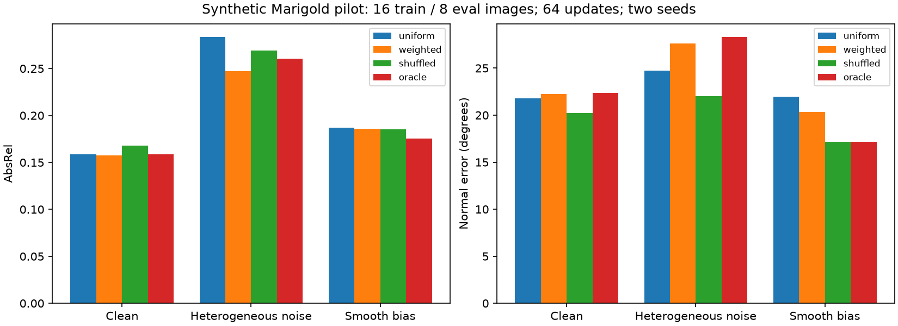

Three completed exploratory studies after V9: saved-prediction error regions, fixed training-image gradients, and a small controlled-noise Marigold training experiment. These studies explain mechanisms; they do not replace independent real-world confirmation.
All32 previously observed development scenes, all3 V9 seeds and all7 conditions. Regions are identical across models. Sensitivity quartiles use depth-derived labels only for retrospective interpretation; they were not supplied to the trained V9 models at inference. Scene errors are averaged equally. Depth-gradient regions are not semantic boundaries or verified planar surfaces.

No regional p-values or cherry-picked significance claims. Full per-scene means, pixel counts, p90 errors and paired scene differences: regional.json.
Numerical diagnostic amendment: 1 of56 BF16 probes exceeded the original2% gradient-sum discrepancy screen. All flagged BF16 measurements were retained, and each was additionally checked in full FP32 with relative discrepancy below0.1%. This is a numerical sensitivity analysis, not a change to any training method, seed, data, loss or budget. Interpret near-zero gradient cosines cautiously. See the preserved amendment and per-probe FP32 references.
Four predetermined training images and two noise draws per state. Shared LoRA gradients for depth supervision, normal supervision and uniform/weighted decoded geometry. Eight probes per state, no optimizer updates. Negative cosine indicates local disagreement; it does not prove validation harm. Ratios include the actual0.1 geometry coefficient.

| State | Depth/normal cosine | Conflicting probes | Uniform ratio | Weighted ratio |
|---|---|---|---|---|
| initial_seed17 | -0.0198 | 4/8 | 0.1359 | 0.1334 |
| uniform_seed17 | 0.0605 | 2/8 | 0.3891 | 0.4224 |
| uniform_seed29 | 0.0122 | 4/8 | 0.4432 | 0.4242 |
| uniform_seed43 | 0.0787 | 2/8 | 0.5398 | 0.4927 |
| weighted_seed17 | 0.0263 | 4/8 | 0.4502 | 0.4516 |
| weighted_seed29 | 0.0251 | 4/8 | 0.5016 | 0.4515 |
| weighted_seed43 | 0.0656 | 2/8 | 0.5946 | 0.5043 |
Actual Marigold with rank4 LoRA, fresh seed-matched initialization,16 analytic rendered training surfaces and8 evaluation surfaces with different generator seeds. Clean, heterogeneous-noise and smooth-bias training labels; all evaluation labels remain clean analytic geometry. RGB is always rendered from clean geometry. All rules share masks, targets, order and random noise. Only geometry consistency is spatially weighted. The privileged oracle uses true normal-label error; it is not deployable and is not a guaranteed performance upper bound.

| Corruption | Rule | Depth AbsRel | Normal degrees | Individual seed means |
|---|---|---|---|---|
| clean | uniform | 0.15836 | 21.776 | [{'seed': 17, 'depth': 0.17080701069469673, 'normal': 17.350939852987906}, {'seed': 29, 'depth': 0.14591614537659547, 'normal': 26.201307347159652}] |
| clean | weighted | 0.15723 | 22.261 | [{'seed': 17, 'depth': 0.16857440959246434, 'normal': 17.5105214722824}, {'seed': 29, 'depth': 0.14588713804763084, 'normal': 27.01063583985692}] |
| clean | shuffled | 0.16794 | 20.219 | [{'seed': 17, 'depth': 0.16809579325939078, 'normal': 17.778067901562363}, {'seed': 29, 'depth': 0.16778946896292107, 'normal': 22.659714315883217}] |
| clean | oracle | 0.15864 | 22.369 | [{'seed': 17, 'depth': 0.1702429860359558, 'normal': 17.669643619375197}, {'seed': 29, 'depth': 0.14704109741895144, 'normal': 27.067841163887067}] |
| heterogeneous_noise | uniform | 0.28346 | 24.713 | [{'seed': 17, 'depth': 0.2683216004090756, 'normal': 19.575837985674614}, {'seed': 29, 'depth': 0.2986073723024922, 'normal': 29.84925132292117}] |
| heterogeneous_noise | weighted | 0.24738 | 27.625 | [{'seed': 17, 'depth': 0.2285307892896713, 'normal': 25.332304231460856}, {'seed': 29, 'depth': 0.26622863219869203, 'normal': 29.917357493353254}] |
| heterogeneous_noise | shuffled | 0.26887 | 22.039 | [{'seed': 17, 'depth': 0.2727982200093383, 'normal': 19.57326887779502}, {'seed': 29, 'depth': 0.2649320166792342, 'normal': 24.504748020013004}] |
| heterogeneous_noise | oracle | 0.26040 | 28.301 | [{'seed': 17, 'depth': 0.2209057298612503, 'normal': 25.232164575744726}, {'seed': 29, 'depth': 0.29990207122281154, 'normal': 31.370803933333047}] |
| smooth_bias | uniform | 0.18720 | 21.978 | [{'seed': 17, 'depth': 0.1791115870957787, 'normal': 17.98629696862011}, {'seed': 29, 'depth': 0.1952951534021844, 'normal': 25.97009201622444}] |
| smooth_bias | weighted | 0.18590 | 20.348 | [{'seed': 17, 'depth': 0.17893395220738434, 'normal': 17.706867818186694}, {'seed': 29, 'depth': 0.1928753256078771, 'normal': 22.988478996308913}] |
| smooth_bias | shuffled | 0.18524 | 17.155 | [{'seed': 17, 'depth': 0.17445438815030279, 'normal': 17.67289902244665}, {'seed': 29, 'depth': 0.1960317805352761, 'normal': 16.636772872755408}] |
| smooth_bias | oracle | 0.17532 | 17.186 | [{'seed': 17, 'depth': 0.1753476550096841, 'normal': 17.25184555661264}, {'seed': 29, 'depth': 0.17529260213602454, 'normal': 17.119892325306566}] |
Initial-model seed measurements (before adaptation): [{'seed': 17, 'depth': 0.7647103813161322, 'normal': 71.86782439831299}, {'seed': 29, 'depth': 0.7647103813161322, 'normal': 71.86782439831299}].
Two training seeds,64updates/run,24runs. This short synthetic-domain pilot is not evidence of convergence, adequate power or real-scene transfer. Failure to improve cannot establish that weighting is useless; an oracle null result can also arise from insufficient optimization or domain mismatch. Initial-model measurements and clean-label controls are retained. Noise conditions test mechanisms; they do not estimate how much such noise occurs in NYUv2.
{'new_noise_predictions': 416, 'restored_tasks': 48, 'optimizer_updates': 1536, 'old_prediction_hashes': 1152, 'gradient_probes': 56, 'historical_files_unchanged': 1430}Independent final and initial prediction metric checks, exact final checkpoint inference restoration, matched image-order checks, source/input hashes and historical-file preservation. Small mixed-precision differences between separate and combined gradient calculations are recorded; training is not claimed bitwise deterministic.
Frozen protocol | Summary data | Gradient probes | Synthetic input provenance | V9 results